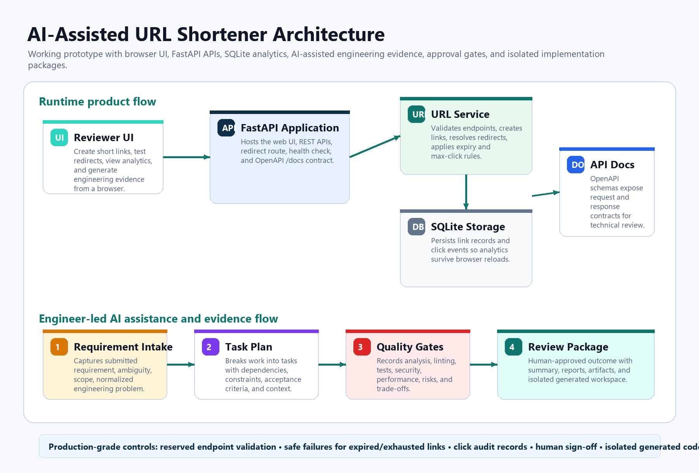
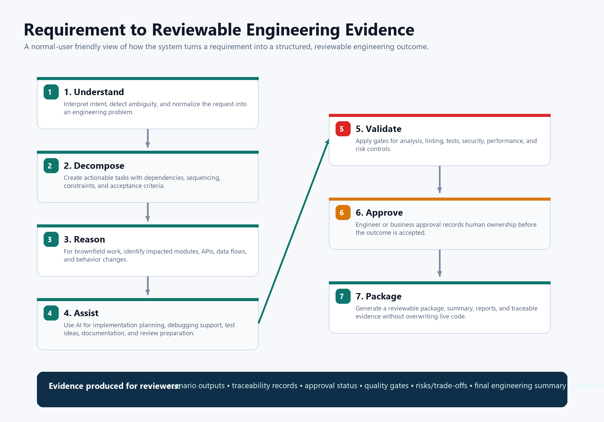
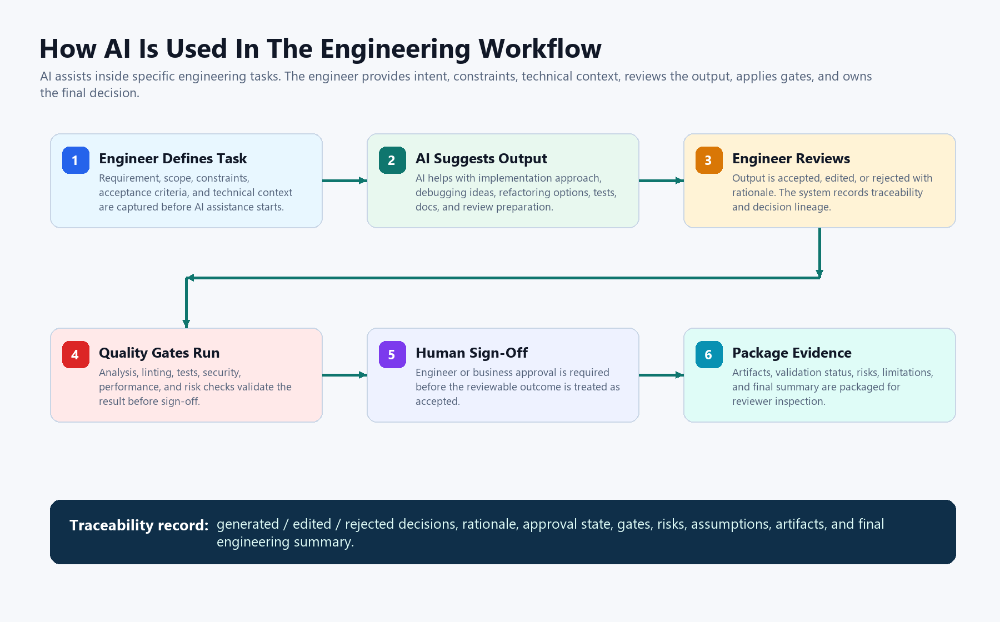

Prototype
Complete
FastAPI, SQLite, static UI, redirects, stats, disable, expiry, max clicks.
AI-assisted software engineering prototype
A FastAPI URL shortener that demonstrates requirement understanding, task decomposition, AI-assisted execution, validation, and controlled engineer oversight.
Complete
FastAPI, SQLite, static UI, redirects, stats, disable, expiry, max clicks.
Complete
Components, tools, execution flow, control flow, and key decisions documented.
Complete
Greenfield, brownfield, and ambiguous paths each show execution and validation.
Complete
pytest, ruff, smoke gates, security checks, generated-package validation.
The live backend is deployed on Render. GitHub Pages is the static project hub.
cd ai_assisted_shortener
python -m pip install -r requirements.txt
python -m uvicorn app.main:app --host 127.0.0.1 --port 8010
These images explain the system for non-technical reviewers without requiring them to open markdown files.



A single UI snapshot is included for visual context. Use the live demo and repository links above for the actual application and code.

| Deliverable | Link |
|---|---|
| Source code | ai_assisted_shortener/ |
| Architecture overview | ARCHITECTURE.md |
| Scenario evidence | SCENARIOS.md |
| Testing, limitations, trade-offs | TESTING.md |
| Requirement coverage | COMPLIANCE_MATRIX.md |
| Deliverables checklist | DELIVERABLES.md |